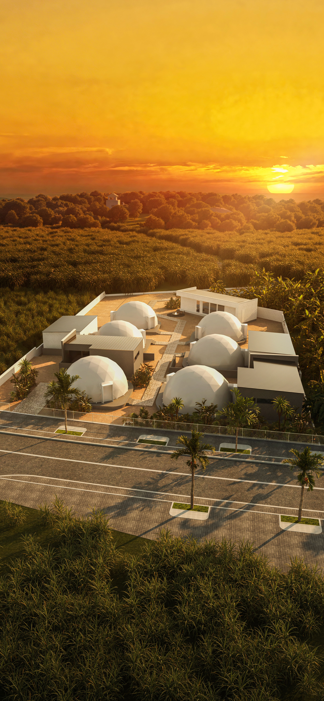
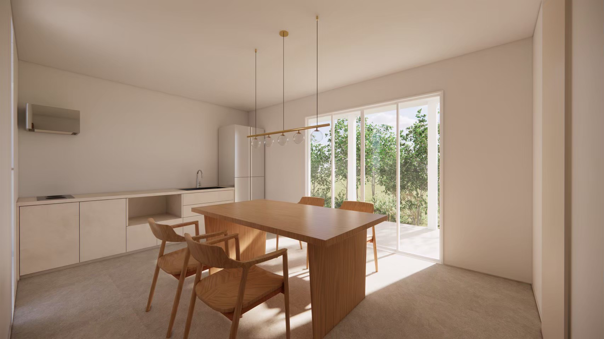
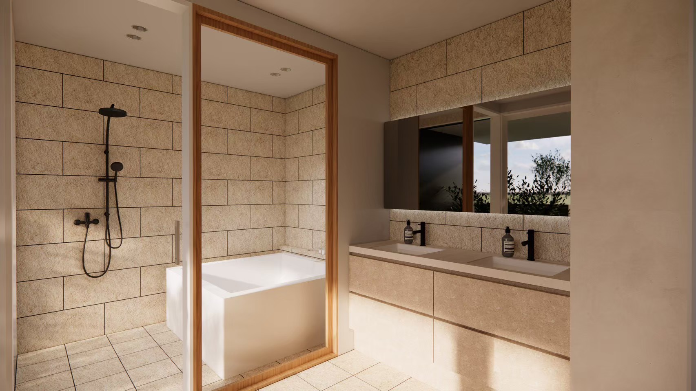
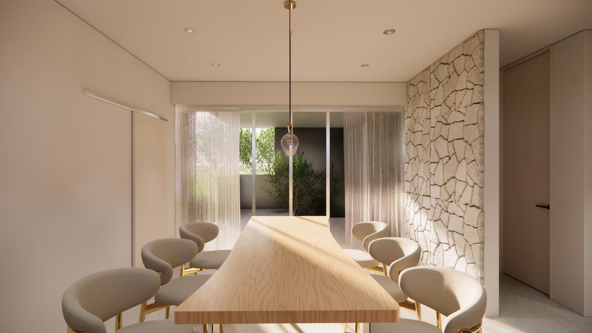
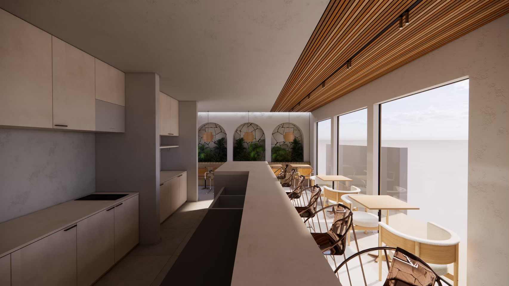

Dome Stayドームステイ
Private Dome Atmosphereプライベートなドーム空間
Rounded forms, island light, and a stay that feels different from a standard hotel room.
丸みのあるドーム空間と島の光を感じる、ホテルとは少し違う滞在。

Opening July 20262026年7月オープン予定
TOPPURI is a new villa glamping stay coming to Miyakojima, shaped around dome-style rooms, warm interiors, and slow island evenings.
TOPPURIは、宮古島に誕生する新しいヴィラグランピングステイ。ドーム型の客室、あたたかな室内空間、そして島のゆるやかな夜を楽しむための場所です。
Opening Previewオープニングプレビュー
This first look is intentionally quiet: a preview before the full opening story begins. More details will be added as TOPPURI moves toward its July opening.
これは本格オープン前の静かなプレビューです。7月のオープンに向けて、客室や滞在の魅力を少しずつ更新していきます。

Dome Stayドームステイ
Rounded forms, island light, and a stay that feels different from a standard hotel room.
丸みのあるドーム空間と島の光を感じる、ホテルとは少し違う滞在。

Deluxe Roomデラックスルーム
A relaxed villa-style setting for families, friends, and travelers who want a little more space.
家族や友人との滞在にも心地よい、ゆとりのあるヴィラスタイルの空間。

Suite Previewスイートプレビュー
Warm stone, calm bathing spaces, and a more private way to end the day.
あたたかな石の質感、落ち着いたバス空間、一日の終わりを静かに過ごす贅沢。
Why We Are Watching This Opening注目している理由
TOPPURI feels suited for travelers who want the beauty of Miyakojima without rushing: beach days, sunset drives, quiet dinners, and a place that still feels special when they return at night.
TOPPURIは、宮古島を急がずに楽しみたい旅行者に合う滞在先。ビーチ、夕暮れのドライブ、静かな食事、そして夜に帰る場所まで特別に感じられる空間です。


Opening Updatesオープン情報
This page will be updated as the opening approaches, including room details, booking information, and stay ideas around Miyakojima.
オープンが近づくにつれて、客室情報、予約情報、宮古島での過ごし方などを順次更新していきます。
View Current Booking Preview 現在の予約プレビューを見る